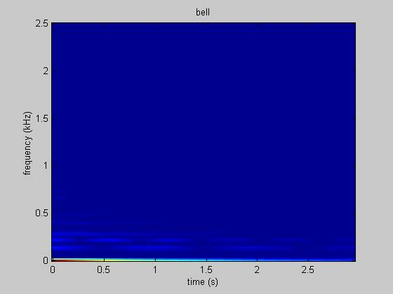

Bell
Synthesis
The
last part involved synthesizing a bell by adding frequencies together. I used instrument parameters from Fig. 4.28
in the class handout. I used the
duration as a time constant to the decaying amplitude exponential. It does sound like a bell to me, but I’m not
sure if it’s as good as using the FM synthesis technique. The spectrogram is below (unfortunately most
of the information is in the first harmonic).
Here is the matlab code and the audio.
